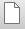
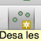

First Steps With QGIS
Beginning a new project
In QGIS, "projects" are used to store the settings you are using. It is helpful to start a new project for each map or set of related maps that you are making. This way, you can return to your work later and start from where you left off. Note, however, that the project file does not store the data you are using or the maps you generate. These must be stored as separate files.
To start a new project use the menu item Project → New or the  button.
Changing the language
When you start QGIS it will normally be set to the default language of your computer's operating system. To change the language, use the menu item Settings → Options and select Locale. The check the box Override system locale and select the language you want. You will need to restart QGIS for the change to go into effect.
Installing plugins
QGIS makes it easy for the QGIS development team as well as anyone else to write "plugins," which add particular features or functions to the program. Many of these are extremely useful.
To install a plugin, use the menu item Plugins → Manage and install plugins.... This will bring up a window with a long list of available plugins on the QGIS official repository. (There are other plugin repositories that individual authors maintain but for now we will use only the official one.). Use the search bar or scroll down the list to find and install the OpenLayers plugin. (If it is already installed on your machine, you will see a check next to it and you do not need to do anything else. In the computer labs, even if you have installed a plugin during a previous session it may not remain on your machine in future sessions so it is a good idea to check that you have what you need before starting.
Using the OpenLayers plugin for map tiles
To quickly make use of existing map tiles, you can use the OpenLayers plugin. This will let you connect to various map tile servers, which will allow you to use QGIS much in the way you may have used Google Maps on a web browser.
Select the menu item Web → OpenLayers plugin → OpenStreetMap → OpenStreetMap. (OpenStreetMap is just one of the possible map tile servers - try the others as well.) You will now see the OpenStreetMap tiles in your console. You can pan and zoom around the map (although, as you will see, this doing so it not as easy as it is on, say, Google Maps through a web browser). The easiest way to zoom-in on a particular location is to select the Zoom In tool (View → Zoom In). Then use the mouse to draw a small box over the location you want. You will probably need to do this several times - and you may need to zoom out in the process if you end up in the wrong spot. Try zooming in our building.
Placing points on the map
The most straightforward (although least efficient) way to mark points on your map is to do it manually.
To do this, you first need to create a new map layer ,using Layer → Create layer → New Shapefile Layer or the button. In the window that pops up, you can choose to make this a layer of points, lines, or polygons. You can also modify the character encoding, the Coordinate Reference System, and the data fields that will be associated with this new layer. For now, keep the default values (which will produce a point layer), and click OK. You will then need to choose a directory and file name for this new layers.
In order to add a point, move the cursor over your new layer in the Layers Panel and right-click on it. Then select Toggle Editing.
Now select the menu item Edit → Add Feature or press the  button. Click on the map wherever you want to add a point. Place a point on th approximate location of our classroom. Each time you click, you will need to provide attributes for the fields you created when you created the layer. For now, since we used the defaults, we need only an id. Give this whatever value you want.
Mapping Basics
Mapping crime locations
Obtaining Data
To get started, we will use data on reported assaults in New York City during November and December 2016. This has already been extracted from NYC Open Data and can be downloaded simply by clicking the button below. Save it to a location where you will be able to find it again.
Download the DataAdding data to your map
Add the data to your map using Layer → Add Layer → Add Delimite Text Layer..., or with the button.
Select the data file you want (for this exercise, use the file you just downloaded and saved: NYPD_Complaint_Map__Year_to_Date.csv). In the Geometry definitionbox, make sure Point coordinates is selected. Make sure that the X field and Y field boxes contain the correct field names from your data for the x and y coordinates. You can check this by looking at the data preview shown in the bottom of the window. In this case, QGIS automatically recognizes that there are fields labeled Longitude and Latitude and that these should be x and y, respectively. Now click OK.
A new window will now pop up for you to select a Coordinate Reference System (CRS) for the layer you are adding. This will often require some thinking because selecting the wrong CRS will lead to your layer being incorrectly placed on the map (or sometimes not visible at all). For points recorded as Latitude and Longitude, you will want to use WGS 84 - EPSG 4326. (If you type 4326 in the filter bar at the top it will come up.) To view your new layer, you will probably need to pan and zoom to get to the location where it actually has data - in this case New York City. You can do that quickly by right-clicking on the layer in the Layers Panel and selecting Zoom to Layer. You may also need to make sure that the layer is not being covered by another layer. The order of the layers in the Layers Panel is the order in which they appear on the map (imagine actual layers of paper or transparent paper with features on a physical map). You can drag layers up and down in that list to change the order. To learn more about each point marked on the map, select View → Identify Features and click on a point. You will see information in the Identify Results panel on the right (although you may need to expand that panel to see the values associated with each feature.
Printing or Exporting a Map
What you see in the QGIS console is useful for creating, modifying, and analyzing your map. If you want to share your map with someone or publish it as part of a report, you will want to use the print composer to produce high-quality output.
Setting up the Print Composer
Select Project → New Print Composer. In the dialog box that pops up, you can give this print composer a title or leave the box blank and click OK for the default title. You will now see a new window with a canvas that you can use to compose exactly how you want your map to look.
Adding a map
The most obvious thing you will want on your composed map is the map itself. Select Layout → Add Map and then use the mouse to draw a rectangle on the canvas where you want the map to appear. Notice that the map that will now appear in that box is essentially a mirror image of the map you currently have in the main console (although the dimensions may be different depending on how you draw the box). After drawing the box, you can still move it around using the Layout → Move Item tool, and you can move the map around within it using the Layout → Move Content tool. Notice that you can add more than one map to your canvas. This makes it possible to include inset maps, for example, showing where your detailed map lies at a larger scale.
Adding a scale bar
You may wish to add a scale bar to your map, and you can do this easily using Layout → Add Scalebar. Again, you will need to click on the map to position and resize the scale bar. You will notice that you also have many options to choose from in changing its appearance using the Item properties tab on the right.
Adding a legend
To add a legend, select Layout → Add Legend and use the mouse to draw a rectangle where you want the legend to appear. The legend will be automatically filled with the information in your layers list, but you can modify this using the Item properties tab on the right. Select the legend you have added and scroll down the Item properties to the Legend Items section. Uncheck Auto update. Now select the layers you do not wish to see in the legend and click the minus sign at the bottom to remove them. Next click the item(s) that you want in the legend and use the editing button to edit the text that will appear. In the Main properties section you can also change the title and alignment of the legend text.
Exporting your map
When you are happy with your map, use Composer → Export as Image... or Composer → Export as PDF... to export your map to a single file, which you can then share, embed in a report, or print.
Creating Vector Data From Raster Base
It will often be necessary to create vector data -- points, lines, or polygons -- by tracing features on an existing raster map. This recipe will walk you through that process.
Adding a raster
Start a new project and add a raster layer. For this exercise, use a high resolution orthophoto, such as those available at http://www.icc.cat/appdownloads/index.html. By saving the file in GeoTiff format you will ensure that it includes projection (CRS) information that QGIS can read automatically. Add the layer using Layer → Add Layer → Add Raster Layer... and then selecting the file. (If the file itself does not contain projection information, you will need to supply this.)
Creating a new vector layer.
Create a new vector layer using Layer → Create Layer → New Shapefile Layer.... In the dialog box that comes up, you can select the type of layer, character encoding, CRS, and the data fields to associate with the new layer. For this exercise, choose Polygon as the type, and add at least one new field in which you will store information associated with each feature that you draw. For this exercise, we will be using the layer to indicate the approximate number of people on each block surrounding a building, so create a Whole Number field and give it a name (e.g. N). Save the new layer as an SHP file in a directory where you will be able to find it again.
Adding features
The new layer you have added should appear in the Layers Panel. Right click on this new layer and hit Toggle Editing. You will now see a set of new buttons and available menu items. Select Edit → Add Feature. When you hover the mouse pointer over the map you will see that it now has the shape of a cross-hairs. Left click to add sequential points that define the polygon you want to add. When you have added the last point, right click the mouse and a dialog box will appear asking you to add the fields associated with this new feature. Remember that what you add will be limited by the field type you chose (and the ID field requires whole numbers by default). For this exercise, draw a rectangle over each of the sidewalks surrounding the building (so four separate features).
Adjusting Vector Layer Appearance
QGIS gives you control over how your vector layers appear: You can adjust color, fill style, transparency, labeling, and many other characteristics.
Opening the properties window
To do this, you need to start by opening the Layer Properties window. Right click on the layer you want to adjust and select Properties. You will see a new window with a set of tabs on the left.
Changing the color
To change the layer's color, select the Style tab. If this is a polygon layer, you will see a box with Fill and under this Simple fill. Click on Simple fill and then use the scroll bar on the right side of the window to scroll down until you see the Fill, Outline, and Fill style selectors. Click the Fill selector and choose a color. Notice that you have different options for picking the color, including choosing one from a pallet or gradient, entering HSV or RGB values, or entering an HTML code. You can also choose the level of opacity, which lets you make semitransparent features. (Note that this can be set for the fill color itself or for the entire layer.)
Changing the border and fill style
You can also change the border and fill style using the Outline and Fill style selectors.
Adding labels
To add labels to your layer, select the Labels tab. At the very top of the window, change the selector from No labels to Show labels for this layer. Just underneath this selector, you will see a selector for Label with. Use this to select the field you wish to use for your labels. If you created a field in the exercise above for number of people, you can use this to automatically display this information on each feature. Alternatively, you might have a field for name or ID. The idea here is that QGIS can automatically use one of the fields to generate labels. Try making labels and click OK to see how they look. Then return to the Properties window to explore the various options you have for adjusting the labels' appearance.
Adding OpenStreetMap vectors
One useful way to add existing vector information to a map, while also making it possible to customize its appearance, is to download data from OpenStreetMap (OSM). The process will be to download the OSM file for a given area, then open it, choose the layers that you want, filter these layers according to feature type, and then modify appearances.
Downloading OSM data
Start with some raster base map that lets you navigate to a place of interest (OSM map tiles, an orthophoto etc.). Zoom in to a small area, such as a neighborhood or several city blocks. Now select Vector → OpenStreetMap → Download Data.... In the window that appears, select From map canvas for the extent. (This is a simple way of defining the boundaries of the data you will download. Note that selecting large boundaries will result in very large file sizes.) Now click the ... button next to Output file and select a file name and destination directory to which you will save the downloaded information.
Opening the OSM file and selecting layers
To add the OSM data you just downloaded, select Layer → Add Layer → Add Vector Layer.... Browse to the OSM file you just downloaded and select OK then Open to open it. You will now see a new window with a list of layers that this file contains. You can select some or all of these. When you hit
Labeling the vector data
You can add labels to this new layer just as you did above. You may find, however, that there is too much information and that you want to filter it somehow. You can filter the labels themselves using the labels tab. Or you can filter the features in the layer as follows:
Filtering the vector data
To filter a layer, open the Properties window (right click the layer and select this) and go to the General tab. Scroll down and you will see a Provider feature filter box. Click on the Query Builder button just below this box on the right. This will bring up a new window in which you can write a query to filter the features in this layer according to their attribute fields. To do this, you need to know something about what these fields contain, and you can see this by clicking on a field and hitting the Sample button. You can then create a filter by double clicking on a field name, clicking an operator, and then double clicking a value. You will see the query being built as you do this in the box at the bottom. For example "highway"='tertiary' would filter the features to include only those for which the "highway" field has the value (character string in this case) 'tertiary'.
Another way of filtering, which is often easier, is to start by coloring the features according to some field of interest. In the Style tab, select Categorized in the selector at the top. Then choose the field you want to use for this in the Column selector. Hit the Classify button and QGIS will assign a different random color to each different value that appears in this field. Click OK to see how this looks on the map. You can now click the field in the Layers Panel to expand it to show each unique value and the color assigned to it. You can click any of these to remove or return it to the map.
Mapping Aggregated Data
Choropleth Maps
Downloading data
For this exercise, we will use 2013 data extracted from the Eurostat database Recorded offences by offence category - police data. (This data has been cleaned sightly after extraction to make things faster.)
Download DataDownload Shapefiles
We will map this data using the Eurostat Countries 2013 shapefiles at the 1:3 million scale.
Download ShapefilesUnzip the Shapefiles
The file you downloaded is a zipped archive of shapefiles. Find the directory in which you saved it and double click on the file to unzip it.
Add Country Boundaries to Map
Add the country boundaries using Layer → Add Layer → Add Vector Layer, or with the  button.
button.
In the add vector layer window that pops up, leave Source type as it is (the default is File with System encoding), and click the Browse button in the Source section to select the shapefiles you want to add. Navigate to the directory in which you unzipped these files look at what you have. You will see a number of sets of files with identical names. Each set represents a different layer. We will be using CNTR_RG_03M_2013, but go ahead and add all of them just to see what they look like. To do this, sort the files by type and then hold down the Shift key will clicking on all of the files that have the .shp extension. (QGIS will automatically open all associated files, which have the same names but different extensions).
After selecting the files, click "Open" in the two dialog windows, and the shapes should appear on the map. (Remember that the order of the layers in the layer panel controls the order on the map and that you may need to change this to view certain layers.)
Adding the data
Add the data using Layer → Add Layer → Add Delimited Text Layer..., or with the button.
In the File Name box, select the data file (for this exercise, it is crim_off_cat_rates.csv if you did not change the name when saving it). In the File format box, choose CSV if it is not already chosen. Look in the preview area below and see if the data is appearing in an organized way, with column headings and values. (It should be for this exercise, but if you use a different data set in the future and it is not appearing correctly, the first thing to try is selecting the Custom delimiters option for File format and trying the Semicolon option or something else.) For Geometry definition, select No geometry (attribute only table). This data source does not have coordinates. It simply has data by country name and you will need to link those country names to your shapes in the following step. Click OK.
Join the country polygons with the data.
In the layers panel, right click on the country boundary layer (which will be called CNTR_RG_03M_2013 if you have not changed the names) and select Properties. In the properties window, select the Joins tab.
To join the data to the polygons, there needs to be a field in the data table that contains a set of unique identifiers corresponding to a set of the same unique identifiers in the polygon attribute table. For this exercise, the GEO field in the data table has country codes that correspond to the same country codes in the polygon attribute table's CNTR_ID field. (When you are using your own data sources, this will often require some initial cleaning. For example, you may need to convert country codes to make sure they match, or you may need to deal with complications like states, like Yugoslavia, that have broken apart or those, like Germany, that have formed through unification.)
Click the  button. For Join layer, select your data you want to join (for this exercise it is crim_off_cat_rates). For Join field, select the field in the data table that you will be using for this join. In this case, GEO. For the Target field, select the field in the polygon attribute table that you will be using for the join. In this case, CNTR_ID). Click OK and then Apply.
button. For Join layer, select your data you want to join (for this exercise it is crim_off_cat_rates). For Join field, select the field in the data table that you will be using for this join. In this case, GEO. For the Target field, select the field in the polygon attribute table that you will be using for the join. In this case, CNTR_ID). Click OK and then Apply.
Color the polygons according to crime data
In the Style panel, choose Graduated in the selector at the very top. Now select for Column the field you want to represent on the map. Since you have joined the data with this polygon layer, you will be able to choose from the fields in the data table as well as in your polygon attribute table. For this exercise, choose crim_off_cat_rates_Theft). Select a Color ramp that you like. Under the Classes tab, select a choice for Mode. You can experiment with different options and see how they appear. Now click the Classify button and then click OK.
Clean the map
Use the layers panel to remove any unnecessary layers that are distracting (for instance, if you included all of the shape files in the Eurostat country data). Use the zoom and pan tools to focus the map on the area of interest to you.
Proportional Symbols
The choropleth map you just produced represents quantitative data using colors. But it is limited to showing one field from your data. What if you want to show additional information? One option would be to add a symbol on top of each color, making the size proportional to the additional values you want to display. In other words, one field will be displayed by color and another by size.
If you added all of the shapefiles that you downloaded in the last exercise, then you already have everything you need. Put a check next to the CNTR_LB_2013 layer in your layers panel to display a point for each country on top of the choropleth. You will use these points to place your proportional symbols. Right-click on this layer and select Properties. Use the same approach as in the last exercise to join this layer to your data table.
Style the point symbols using graduated sizes
In the Style panel, select Graduated at the top and choose the Column you want to represent here. For this exercise, choose crim_off_cat_rates_TOTAL. For Method now select Size. Choose a Mode and click Classify. You will need to play around with classification modes as well as minimum and maximum sizes to create symbols that are useful for explaining your data. Click OK to display the result on your map.
Pie Charts
To include even more information on your map, you may want to include some small charts that are then placed on top of geographic features. for this exercise we will use pie charts.
Return to your point layer properties and now select the
Aggregating Point Data
Counting Points in Areal Units
Obtain the data
For this exercise, we will again use the New York City assault data extracted from NYC Open Data, which you can download by clicking the button below.
Download the dataObtaining shapefile
We will use the polygons in the New York City police precinct geojson shapefile from the same site. You can download it using the button below. If the geojson text appears in a new browser window rather than automatically triggering a download prompt, simply choose Save Page As... or else copy the text and past it into a new text file, saving with the geojson extension.
Download geojson shapefileAdd the shapefile layer to your map
Add the shapefile to your map with Layer → Add Layer → Add Vector Layer..., or with the button.
Select the geojson file and click Open.
Add the data
Add the data using Layer → Add Layer → Add Delimited Text Layer..., or the button.
Select the data file (for this exercise it is NYPD_Complaint_Map__Year_to_Date.csv). On the Geometry definition line, make sure Point coordinates is selected and make sure the Longitude and Latitude fields are selected for the X field and Y field, respectively. Click OK.
In the Coordinate Reference System window that should now pop up, select the appropriate coordinate reference system. If the points are defined by Latitude and Longitude (as in our exercise data), then this should be WGS 84 (EPSG 4326). (If you are using data in another coordinate reference system, make sure you check which this is in the data documentation.)
Count the points in each polygon
To count how many points (crime report locations) fall within each polygon (police precinct), use Vector → Analysis Tools → Count points in polygon.
In the parameters tab of the window that pops up make sure that the correct layers are selected for the polygons and the points, and click Run.
You will now see that a new layer has appeared on your map and inyour layers window. The new layer contains the polygons from your original polygon layer, but it also has an attribute table that links each of these polygons to the count of points that falls within it. The polygons will appear by default with one single fill color, but you can change the style to color them according the count. (For example, follow the Mapping Aggregated Data recipes.)
Geocoding
Geocoding is the process of converting addresses into geographic coordinates. We can do this in QGIS using the MMQGIS Plugin.
Install MMQGIS
Install the MQGIS plugin using Plugins → Manage and Install Plugins and searching for mmqgis.
Obtain CSV address file
The addresses you want to geocode using MMQGIS need to be in a CSV file that includes fields for address, city, state (province), and country. You could create a file like this using Excel or you may have a file like this already from whatever data source you are working with. For this exercise, use the file here:
Download the address dataUse the MMQGIS geocoding function
To geocode these addresses, click MMQGIS → Geocode → Geocode CSV with Google / Open Street Map.
In the dialog window that pops up, choose the CSV file with your addresses and make sure the Address, City, State, and Country fields are selected correctly. If you choose to geocode with Google Maps, you may need to obtain an Google API key to avoid limits. The simpler alternative is to use the OpenStreetMap / Nominatum option. You will also need to specify file names for the output file (where the geolocations will be stored) as well as for a file that will store a list of addresses that could not be geocoded. This second part is important because you will need to find ways to locate these addresses (often by modifying the address text). When you have all of this specified, click OK.
If some or all of the addresses could be geocoded, you will see a new points layer appear on your map, containing the locations. Make sure to check the file of addresses that could not be geocoded as well, and figure out what went wrong with these. One common error is with the character encoding. Your csv file needs to be encoded as UTF-8.